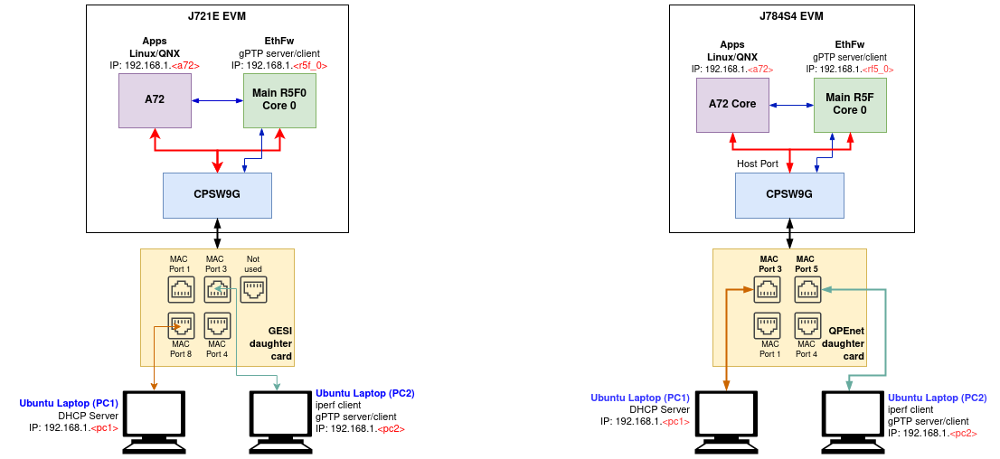

Ethernet Firmware is integrated part of vision_apps and enabled by default. This stack is TI RTOS based application for configuration of Ethernet switch and is expected to be hosted on Cortex R5F in Main Domain.

The switch software uses PDK Enet and other drivers for respective IP configuration. The software stack contains remote configuration server, resource management library, switch resident protocols, proxy layers to handle local and remote API calls and demonstration applications (EthFw Demos).
Below are some top-level features demonstarted in EthFw:
- Basic L2 switching
- Send/receive packets over TCP/UDP
- TCP iperf performance testing
- Support for remote cores (Linux, QNX)
- Time-synchronisation using gPTP
Hardware Setup
The below are required to run EthFw
- J7ES/J7AHP EVM
- GESI daughter card (needed for J7ES)
- QPENET (i.e. QSGMII) daughter card (needed for J7ES/J7AHP)
- Two PCs running Ubuntu connected to the GESI board (for J7ES) in order to demonstrate the L2 switching capabilities as well as to generate and monitor Ethernet traffic
- A pair of network cables, connected as shown in the setup diagram above (for J7ES)
- One cable connected to port8 (switch port) on the GESI card and other end connected to Linux machine (i.e. the DHCP server)
- Second cable connected to port3 (switch port) on the GESI card and other end connected to client machine
- UART cable connected to main UART port on the J7ES EVM
- 12V power supply for the EVM
- SD card
Software Setup
- Install and run a DHCP server on PC1 Ubuntu 22.04 machine by following the instructions here https://help.ubuntu.com/community/isc-dhcp-server This machine will provide IP to R5F (Main MCU2_0), A72 and any client connected via switch port of GESI/QSGMII card.
- iperf network performance tool is required on either PC1 or PC2. Install iperf in the selected Ubuntu PC(s):
sudo apt-get install iperf
- packETH tool is required only in PC1. Install packETH generator tool on Linux PC. The Ubuntu installation can be found in their website: https://packeth.sourceforge.net/packeth/Installation.html The packEth configurations used in this demo are included in the Ethernet Firmware package at <ETHFW_PATH>/docs/packeth_configurations/
Note: Please check licensing information and terms of usage of packETH tool and make sure it adheres to your organization's policy before using and configuring it.
- Wireshark packet analyser tool is required in both PC1 and PC2. Refer to the Wireshark installation instructions on Ubuntu in this website: https://linuxhint.com/install_wireshark_ubuntu/
- For testing gPTP time synchronisation we need to install ptp4l tool on PC2 which is connected to MAC port by following the instructions here https://tsn.readthedocs.io/timesync.html, we can configure PC2 to run either as master or slave by editing the config file.
Note: gPTP time synchronisation is enabled in MAC port 3 in both J7ES and J7AHP. Please connect to MAC port 3 to avoid missing timestamps warnings.
Running the demo (Linux + RTOS) or (QNX + RTOS)
- Build the application and related libraries as mentioned in Build Instructions
- After flashing binaries on SD card using
make linux_fs_install_sd insert in the SD card slot in the EVM
- Open UART client like minicom on /dev/ttyUSB0 (instance 0) where Linux logs usually appear.
- Power on the EVM and let the OS come up.
- Login with root and navigate to /opt/vision_apps on linux and /ti_fs/vision_apps on QNX, run the ./vision_apps_init.sh script.
- Upon sucessfull completion you should see EthFw initialization logs, gPTP initialization logs and version as given below.
j7-evm login: root
Last login: Mon Nov 29 14:43:33 UTC 2021
root@j7-evm:~# source /opt/vision_apps/vision_apps_init.sh
...
...
[MCU2_0] 17.235797 s: ETHFW: Init ... !!!
[MCU2_0] 13.992135 s: Warning: Using 6 MAC address(es) from static pool
[MCU2_0] 13.992450 s: ETHFW: Shared multicasts (software fanout):
[MCU2_0] 13.992492 s: 01:00:5e:00:00:01
[MCU2_0] 13.992538 s: 01:00:5e:00:00:fb
[MCU2_0] 13.992570 s: 01:00:5e:00:00:fc
[MCU2_0] 13.992597 s: 33:33:00:00:00:01
[MCU2_0] 13.992620 s: 33:33:ff:1d:92:c2
[MCU2_0] 13.992643 s: 01:80:c2:00:00:00
[MCU2_0] 13.992667 s: 01:80:c2:00:00:03
[MCU2_0] 13.992691 s: ETHFW: Reserved multicasts:
[MCU2_0] 13.992714 s: 01:80:c2:00:00:0e
[MCU2_0] 13.992737 s: 01:1b:19:00:00:00
[MCU2_0] 13.992951 s: EnetMcm: CPSW_9G on MAIN NAVSS
[MCU2_0] 14.000069 s: Mdio_open: MDIO manual mode enabled
[MCU2_0] 14.002454 s: PHY 0 is alive
[MCU2_0] 14.002749 s: PHY 3 is alive
[MCU2_0] 14.003372 s: PHY 12 is alive
[MCU2_0] 14.003615 s: PHY 15 is alive
[MCU2_0] 14.003714 s: PHY 16 is alive
[MCU2_0] 14.003813 s: PHY 17 is alive
[MCU2_0] 14.003911 s: PHY 18 is alive
[MCU2_0] 14.004006 s: PHY 19 is alive
[MCU2_0] 14.004295 s: PHY 23 is alive
[MCU2_0] 14.005237 s: EnetPhy_bindDriver: PHY 12: OUI:080028 Model:23 Ver:01 <-> 'dp83867' : OK
[MCU2_0] 14.005741 s: EnetPhy_bindDriver: PHY 0: OUI:080028 Model:23 Ver:01 <-> 'dp83867' : OK
[MCU2_0] 14.006221 s: EnetPhy_bindDriver: PHY 3: OUI:080028 Model:23 Ver:01 <-> 'dp83867' : OK
[MCU2_0] 14.006714 s: EnetPhy_bindDriver: PHY 15: OUI:080028 Model:23 Ver:01 <-> 'dp83867' : OK
[MCU2_0] 14.007208 s: EnetPhy_bindDriver: PHY 16: OUI:0001c1 Model:27 Ver:00 <-> 'vsc8514' : OK
[MCU2_0] 14.007710 s: EnetPhy_bindDriver: PHY 17: OUI:0001c1 Model:27 Ver:00 <-> 'vsc8514' : OK
[MCU2_0] 14.008201 s: EnetPhy_bindDriver: PHY 18: OUI:0001c1 Model:27 Ver:00 <-> 'vsc8514' : OK
[MCU2_0] 14.008708 s: EnetPhy_bindDriver: PHY 19: OUI:0001c1 Model:27 Ver:00 <-> 'vsc8514' : OK
[MCU2_0] 14.010550 s:
[MCU2_0] ETHFW Version : 0.02.00
[MCU2_0] 14.010597 s: ETHFW Build Date: Jul 28, 2023
[MCU2_0] 14.010627 s: ETHFW Build Time: 15:06:28
[MCU2_0] 14.010651 s: ETHFW Commit SHA: a5818372
[MCU2_0] 14.010721 s: ETHFW: Init ... DONE !!!
[MCU2_0] 14.010799 s: unibase-1.1.4-jacinto
[MCU2_0] 14.011476 s: Starting lwIP, local interface IP is dhcp-enabled
[MCU2_0] 14.018553 s: Host MAC address: 70:ff:76:1d:92:c3
[MCU2_0] 14.021513 s: ETHFW: Enable gPTP on MAC port 3 (tilld3)
[MCU2_0] 14.021693 s: ETHFW: TimeSync PTP enabled
[MCU2_0] 14.021736 s: ETHFW: Remove server Init ... !!!
[MCU2_0] 14.021906 s: CpswProxyServer: Virtual port configuration:
[MCU2_0] 14.021959 s: mpu_1_0 <-> Switch port 0: mpu_1_0_ethswitch-device-0
[MCU2_0] 14.021997 s: mcu_2_1 <-> Switch port 1: mcu_2_1_ethswitch-device-1
[MCU2_0] 14.022031 s: mpu_1_0 <-> MAC port 1: mpu_1_0_ethmac-device-1
[MCU2_0] 14.022061 s: mcu_2_1 <-> MAC port 4: mcu_2_1_ethmac-device-4
[MCU2_0] 14.022897 s: CpswProxyServer: initialization completed (core: mcu2_0)
[MCU2_0] 14.022972 s: ETHFW: Remove server Init ... DONE !!!
[MCU2_0] 14.024153 s: [LWIPIF_LWIP] Enet LLD netif initialized successfully
[MCU2_0] 14.030854 s: [LWIPIF_LWIP_IC] Interface started successfully
[MCU2_0] 14.030926 s: [LWIPIF_LWIP_IC] NETIF INIT SUCCESS
[MCU2_0] 14.037383 s: [LWIPIF_LWIP_IC] Interface started successfully
[MCU2_0] 14.037455 s: [LWIPIF_LWIP_IC] NETIF INIT SUCCESS
[MCU2_0] 14.037683 s: Added interface 'br4', IP is 0.0.0.0
...
15.010696 s: INF:cbase:cb_rawsock_open:dmaTxChId=-1 dmaRxChId=-1 nTxPkts=0 nRxPkts=0 pktSize=0
[MCU2_0] INF:gptp:gptpnet_init:Open lldtsync OK!
[MCU2_0] INF:gptp:000009-625285:domainIndex=0, GM changed old=00:00:00:00:00:00:00:00, new=70:FF:76:FF:FE:1D:92:C3
[MCU2_0] INF:gptp:set_phase_offsetGM:domainNumber=0, New adjustment(New GM?)
[MCU2_0] domain=0, offset=0nsec, hw-adjrate=0ppb
[MCU2_0] gmsync=true, last_setts64=0nsec
- You should also see the IP addresses assigned to the R5F and A72 cores as shown below. Note that 'br4' IP is the IP address of the R5F core. The addresses shown in your logs may be different.
[MCU2_0] SNo. IP Address MAC Address
[MCU2_0] 20.599222 s: ------ ------------- -----------------
[MCU2_0] 20.599257 s: 1 10.24.69.43 70:ff:76:1d:92:c2
[MCU2_0] 20.601977 s: Function:CpswProxyServer_filterAddMacHandlerCb,HostId:0,Handle:a3ac1584,CoreKey:38acb7e6, MacAddress:1:0:5e:0:0:fc, vlanId:0, FlowIdx:173, FlowIdOffset:1
[MCU2_0] 20.603914 s: Function:CpswProxyServer_filterAddMacHandlerCb,HostId:0,Handle:a3ac1584,CoreKey:38acb7e6, MacAddress:1:0:5e:0:0:fb, vlanId:0, FlowIdx:173, FlowIdOffset:1
[MCU2_0] 22.010826 s: Added interface 'br4', IP is 10.24.68.137
[MCU2_0] 25.010796 s: domain=0, offset=0nsec, hw-adjrate=0ppb
[MCU2_0] gmsync=true, last_setts64=0nsec
ping test
Once the EVM is booted along with Linux on A72, the virtual net driver module should be loaded and the eth1 network device corresponding to CPSW9G should be added.
- Verify this by running ifconfig -a on Linux terminal console of the EVM.
- Activate network interface on A72 core as follows:
- At this point, data transfer with other devices connected to the network should be possible. Ping the two PCs connected to the switch:
ping 10.24.69.<pc1>
ping 10.24.69.<pc2>
- Similarly, ping the A72 core from either PC connected to the switch:
TCP iperf test
The CPSW switch is capable of steering network traffic without CPU intervention by classifying it based on its characteristics. This can be demonstrated by running iperf server on Linux running on the A72 core and iperf client on any of the external devices, PC 1 or PC 2.
- Start iperf server on Linux running on A72.
- Run iperf client on the selected PC. Set test duration with -t option as needed.
iperf -c 10.24.69.<a72> -t 20 -i 1
Refer ETHFW userguide documentation for more details
gPTP logs for master and slave
After installing ptp4l on PC2, create a ptp config file (ptp_config.cfg) for setting different ptp params while testing gPTP. The contents of the file can be as follows:
[global]
gmCapable 1
priority1 238
priority2 248
logAnnounceInterval 0
logSyncInterval -3
syncReceiptTimeout 3
neighborPropDelayThresh 800
min_neighbor_prop_delay -20000000
assume_two_step 1
path_trace_enabled 1
follow_up_info 1
transportSpecific 0x1
ptp_dst_mac 01:80:C2:00:00:0E
network_transport L2
delay_mechanism P2P
By changing priority1 to 220 or 255 you can force your PC2 to run either as master or slave. Run the following command on PC2 for starting ptp4l:
sudo ptp4l -i <net-interface> -m -l 6 -q -f ~/ptp_config.cfg
If your EVM is running as master, the logs are as follows:
[MCU2_0] 45.213639 s: domain=0, offset=0nsec, hw-adjrate=0ppb
[MCU2_0] gmsync=true, last_setts64=0nsec
[MCU2_0] 55.213637 s: domain=0, offset=0nsec, hw-adjrate=0ppb
[MCU2_0] gmsync=true, last_setts64=0nsec
[MCU2_0] 65.213641 s: domain=0, offset=0nsec, hw-adjrate=0ppb
[MCU2_0] gmsync=true, last_setts64=0nsec
[MCU2_0] 75.213786 s: domain=0, offset=0nsec, hw-adjrate=0ppb
[MCU2_0] gmsync=true, last_setts64=0nsec
If your EVM is running as slave, your logs are as follows:
[MCU2_0] 39.115644 s: IFV:gptp:domainNumber=0, clock_master_sync_receive:the master clock rate to -4571ppb, GMdiff=239nsec
[MCU2_0] 40.115645 s: IFV:gptp:domainNumber=0, clock_master_sync_receive:the master clock rate to -4471ppb, GMdiff=620nsec
[MCU2_0] 41.115647 s: IFV:gptp:domainNumber=0, clock_master_sync_receive:the master clock rate to -4333ppb, GMdiff=1001nsec
[MCU2_0] 42.115646 s: IFV:gptp:domainNumber=0, clock_master_sync_receive:the master clock rate to -4159ppb, GMdiff=1372nsec
[MCU2_0] 43.115642 s: IFV:gptp:domainNumber=0, clock_master_sync_receive:the master clock rate to -3948ppb, GMdiff=1746nsec
[MCU2_0] 44.115646 s: IFV:gptp:domainNumber=0, clock_master_sync_receive:the master clock rate to -3737ppb, GMdiff=1930nsec
[MCU2_0] 45.115642 s: IFV:gptp:domainNumber=0, clock_master_sync_receive:the master clock rate to -3489ppb, GMdiff=2210nsec
[MCU2_0] domain=0, offset=0nsec, hw-adjrate=-3489ppb
[MCU2_0] gmsync=true, last_setts64=0nsec
[MCU2_0] 46.115644 s: IFV:gptp:domainNumber=0, clock_master_sync_receive:the master clock rate to -3252ppb, GMdiff=2296nsec
[MCU2_0] 47.115647 s: IFV:gptp:domainNumber=0, clock_master_sync_receive:the master clock rate to -3023ppb, GMdiff=2293nsec
[MCU2_0] 48.115642 s: IFV:gptp:domainNumber=0, clock_master_sync_receive:the master clock rate to -2797ppb, GMdiff=2275nsec
[MCU2_0] 49.115648 s: IFV:gptp:domainNumber=0, clock_master_sync_receive:the master clock rate to -2623ppb, GMdiff=2008nsec
[MCU2_0] 50.115641 s: IFV:gptp:domainNumber=0, clock_master_sync_receive:the master clock rate to -2455ppb, GMdiff=1846nsec
[MCU2_0] 51.115647 s: IFV:gptp:domainNumber=0, clock_master_sync_receive:the master clock rate to -2319ppb, GMdiff=1601nsec
[MCU2_0] 52.115643 s: IFV:gptp:domainNumber=0, clock_master_sync_receive:the master clock rate to -2210ppb, GMdiff=1348nsec
[MCU2_0] 53.115645 s: IFV:gptp:domainNumber=0, clock_master_sync_receive:the master clock rate to -2158ppb, GMdiff=930nsec
[MCU2_0] 54.115638 s: IFV:gptp:domainNumber=0, clock_master_sync_receive:the master clock rate to -2124ppb, GMdiff=630nsec
[MCU2_0] 55.115649 s: domain=0, offset=0nsec, hw-adjrate=-2124ppb
[MCU2_0] gmsync=true, last_setts64=0nsec
For QNX after running the vision_apps_init.sh script bring up the CPSW ethernet virtual driver as below,
slog2info -c
slog2info -w &
io-pkt-v6-hc -d cpsw9g verbose=0x0
dhclient -nw an0
ifconfig -v
Known Issues
- The GESI card uses the same connector pins as infotainment card so only one of them can be connected
- With EthFw enabled by default, if infotainment board is connected it results in HDMI display corruption. eDP to HDMI adaptors also cannot be used with EthFw enabled. To workaround this issue disable EthFw if required or switch display to eDP.
How to disable ETHFW
- In file vision_apps_build_flags.mak, set BUILD_ENABLE_ETHFW?=no
- Run "make vision_apps_scrub" prior to re-building
- Note: Ethernet Firmware must be disabled in order to use the HDMI display
How to disable gPTP in ETHFW
- In file vision_apps_build_flags.mak, set ETHFW_GPTP_SUPPORT?=no
- Run "make vision_apps_scrub" prior to re-building
- Note: You can't run gPTP if ETHFW is disabled


 1.8.14
1.8.14